<!DOCTYPE html>


  <html class="light page-post">


<head><meta name="generator" content="Hexo 3.9.0">
  <meta charset="utf-8">
  
  <title>电子线路实验上机作业 | LittleGhost&#39;s Blog</title>

  <meta name="viewport" content="width=device-width, initial-scale=1, maximum-scale=1">

  
    <meta name="keywords" content="电子线路,">
  

  <meta name="description" content="实验2 组合逻辑电路部件实验实验目的掌握逻辑电路设计的基本方法 掌握EDA工具MAX-PlusII的原理图输入方法 掌握MAX-PlusII的逻辑电路编译、波形仿真的方法 输入设计的电路图；建立相应仿真波形文件，并进行波形仿真 记录波形和输入与输出的时延差；分析设计电路的正确性 3-8 译码器波形图 4位二进制加法器实验内容：用D触发器实现4位二进制加法器，用仿真软件仿真，观察波形图 实验仪器：D">
<meta name="keywords" content="电子线路">
<meta property="og:type" content="article">
<meta property="og:title" content="电子线路实验上机作业">
<meta property="og:url" content="https://littleghost2016.github.io/2017/03/30/电子线路实验上机作业/index.html">
<meta property="og:site_name" content="LittleGhost&#39;s Blog">
<meta property="og:description" content="实验2 组合逻辑电路部件实验实验目的掌握逻辑电路设计的基本方法 掌握EDA工具MAX-PlusII的原理图输入方法 掌握MAX-PlusII的逻辑电路编译、波形仿真的方法 输入设计的电路图；建立相应仿真波形文件，并进行波形仿真 记录波形和输入与输出的时延差；分析设计电路的正确性 3-8 译码器波形图 4位二进制加法器实验内容：用D触发器实现4位二进制加法器，用仿真软件仿真，观察波形图 实验仪器：D">
<meta property="og:locale" content="zh-Hans">
<meta property="og:image" content="https://littleghost2016.github.io/2017/03/30/电子线路实验上机作业/clip_image002.jpg">
<meta property="og:image" content="https://littleghost2016.github.io/2017/03/30/电子线路实验上机作业/clip_image004.jpg">
<meta property="og:image" content="https://littleghost2016.github.io/2017/03/30/电子线路实验上机作业/clip_image006.jpg">
<meta property="og:image" content="https://littleghost2016.github.io/2017/03/30/电子线路实验上机作业/clip_image008.jpg">
<meta property="og:image" content="https://littleghost2016.github.io/2017/03/30/电子线路实验上机作业/clip_image010.gif">
<meta property="og:image" content="https://littleghost2016.github.io/2017/03/30/电子线路实验上机作业/clip_image012.jpg">
<meta property="og:image" content="https://littleghost2016.github.io/2017/03/30/电子线路实验上机作业/clip_image014.jpg">
<meta property="og:image" content="https://littleghost2016.github.io/2017/03/30/电子线路实验上机作业/clip_image016.jpg">
<meta property="og:image" content="https://littleghost2016.github.io/2017/03/30/电子线路实验上机作业/clip_image018.jpg">
<meta property="og:image" content="https://littleghost2016.github.io/2017/03/30/电子线路实验上机作业/clip_image020.jpg">
<meta property="og:image" content="https://littleghost2016.github.io/2017/03/30/电子线路实验上机作业/clip_image022.jpg">
<meta property="og:image" content="https://littleghost2016.github.io/2017/03/30/电子线路实验上机作业/clip_image024.jpg">
<meta property="og:image" content="https://littleghost2016.github.io/2017/03/30/电子线路实验上机作业/clip_image026.jpg">
<meta property="og:image" content="https://littleghost2016.github.io/2017/03/30/电子线路实验上机作业/clip_image028.jpg">
<meta property="og:image" content="https://littleghost2016.github.io/2017/03/30/电子线路实验上机作业/clip_image030.jpg">
<meta property="og:updated_time" content="2020-03-31T15:02:53.030Z">
<meta name="twitter:card" content="summary">
<meta name="twitter:title" content="电子线路实验上机作业">
<meta name="twitter:description" content="实验2 组合逻辑电路部件实验实验目的掌握逻辑电路设计的基本方法 掌握EDA工具MAX-PlusII的原理图输入方法 掌握MAX-PlusII的逻辑电路编译、波形仿真的方法 输入设计的电路图；建立相应仿真波形文件，并进行波形仿真 记录波形和输入与输出的时延差；分析设计电路的正确性 3-8 译码器波形图 4位二进制加法器实验内容：用D触发器实现4位二进制加法器，用仿真软件仿真，观察波形图 实验仪器：D">
<meta name="twitter:image" content="https://littleghost2016.github.io/2017/03/30/电子线路实验上机作业/clip_image002.jpg">

  

  
    <link rel="icon" href="https://avatars2.githubusercontent.com/u/22980536?s=460&v=4">
  

  <link href="/css/styles.css?v=c114cbeddx" rel="stylesheet">


  
    <link rel="stylesheet" href="/css/personal-style.css">
  

  

  

  


  
    <script async src="https://busuanzi.ibruce.info/busuanzi/2.3/busuanzi.pure.mini.js"></script>
    <link rel="stylesheet" href="//cdn.bootcss.com/font-awesome/4.3.0/css/font-awesome.min.css">
  

</head>
</html>
<body>


  
    <span id="toolbox-mobile" class="toolbox-mobile">盒子</span>
  

  <div class="post-header CENTER">
   
  <div class="toolbox">
    <a class="toolbox-entry" href="/">
      <span class="toolbox-entry-text">盒子</span>
      <i class="icon-angle-down"></i>
      <i class="icon-home"></i>
    </a>
    <ul class="list-toolbox">
      
        <li class="item-toolbox">
          <a
            class="CIRCLE"
            href="/archives/"
            rel="noopener noreferrer"
            target="_self"
            >
            文章
          </a>
        </li>
      
        <li class="item-toolbox">
          <a
            class="CIRCLE"
            href="/category/"
            rel="noopener noreferrer"
            target="_self"
            >
            分类
          </a>
        </li>
      
        <li class="item-toolbox">
          <a
            class="CIRCLE"
            href="/tag/"
            rel="noopener noreferrer"
            target="_self"
            >
            标签
          </a>
        </li>
      
        <li class="item-toolbox">
          <a
            class="CIRCLE"
            href="/link/"
            rel="noopener noreferrer"
            target="_self"
            >
            友链
          </a>
        </li>
      
        <li class="item-toolbox">
          <a
            class="CIRCLE"
            href="/about/"
            rel="noopener noreferrer"
            target="_self"
            >
            关于我
          </a>
        </li>
      
        <li class="item-toolbox">
          <a
            class="CIRCLE"
            href="/search/"
            rel="noopener noreferrer"
            target="_self"
            >
            搜索
          </a>
        </li>
      
    </ul>
  </div>


</div>


  <div id="toc" class="toc-article">
    <strong class="toc-title">文章目录</strong>
    <ol class="toc"><li class="toc-item toc-level-1"><a class="toc-link" href="#实验2-组合逻辑电路部件实验"><span class="toc-text">实验2 组合逻辑电路部件实验</span></a><ol class="toc-child"><li class="toc-item toc-level-2"><a class="toc-link" href="#实验目的"><span class="toc-text">实验目的</span></a></li><li class="toc-item toc-level-2"><a class="toc-link" href="#3-8-译码器"><span class="toc-text">3-8 译码器</span></a><ol class="toc-child"><li class="toc-item toc-level-3"><a class="toc-link" href="#波形图"><span class="toc-text">波形图</span></a></li></ol></li><li class="toc-item toc-level-2"><a class="toc-link" href="#4位二进制加法器"><span class="toc-text">4位二进制加法器</span></a></li><li class="toc-item toc-level-2"><a class="toc-link" href="#四选一数据选择器"><span class="toc-text">四选一数据选择器</span></a></li></ol></li><li class="toc-item toc-level-1"><a class="toc-link" href="#实验3-时序电路设计"><span class="toc-text">实验3 时序电路设计</span></a><ol class="toc-child"><li class="toc-item toc-level-2"><a class="toc-link" href="#D触发器、JK触发器"><span class="toc-text">D触发器、JK触发器</span></a></li></ol></li><li class="toc-item toc-level-1"><a class="toc-link" href="#实验4基于VHDL的基本逻辑电路设计"><span class="toc-text">实验4基于VHDL的基本逻辑电路设计</span></a><ol class="toc-child"><li class="toc-item toc-level-2"><a class="toc-link" href="#BCD码加法器"><span class="toc-text">BCD码加法器</span></a></li><li class="toc-item toc-level-2"><a class="toc-link" href="#波形图-1"><span class="toc-text">波形图</span></a></li></ol></li><li class="toc-item toc-level-1"><a class="toc-link" href="#实验五-数字钟设计"><span class="toc-text">实验五 数字钟设计</span></a><ol class="toc-child"><li class="toc-item toc-level-2"><a class="toc-link" href="#10秒计时器"><span class="toc-text">10秒计时器</span></a></li><li class="toc-item toc-level-2"><a class="toc-link" href="#数字钟"><span class="toc-text">数字钟</span></a></li></ol></li><li class="toc-item toc-level-1"><a class="toc-link" href="#写在最后"><span class="toc-text">写在最后</span></a></li></ol>
  </div>


<div class="content content-post CENTER">
   <article id="post-电子线路实验上机作业" class="article article-type-post" itemprop="blogPost">
  <header class="article-header">
    <h1 class="post-title">电子线路实验上机作业</h1>

    <div class="article-meta">
      <span>
        <i class="icon-calendar"></i>
        <span>2017.03.30</span>
      </span>

      
        <span class="article-author">
          <i class="icon-user"></i>
          <span>LittleGhost</span>
        </span>
      

      
  <span class="article-category">
    <i class="icon-list"></i>
    <a class="article-category-link" href="/categories/技术/">技术</a>
  </span>


      

      
      <i class="fa fa-eye"></i> 
        <span id="busuanzi_container_page_pv">
           &nbsp热度 <span id="busuanzi_value_page_pv">
           <i class="fa fa-spinner fa-spin"></i></span>℃
        </span>
      
      
    </div>
  </header>

  <div class="article-content">
    
      <h1 id="实验2-组合逻辑电路部件实验"><a href="#实验2-组合逻辑电路部件实验" class="headerlink" title="实验2 组合逻辑电路部件实验"></a>实验2 组合逻辑电路部件实验</h1><h2 id="实验目的"><a href="#实验目的" class="headerlink" title="实验目的"></a>实验目的</h2><p>掌握逻辑电路设计的基本方法</p>
<p>掌握EDA工具MAX-PlusII的原理图输入方法</p>
<p>掌握MAX-PlusII的逻辑电路编译、波形仿真的方法</p>
<p>输入设计的电路图；建立相应仿真波形文件，并进行波形仿真</p>
<p>记录波形和输入与输出的时延差；分析设计电路的正确性</p>
<h2 id="3-8-译码器"><a href="#3-8-译码器" class="headerlink" title="3-8 译码器"></a>3-8 译码器</h2><h3 id="波形图"><a href="#波形图" class="headerlink" title="波形图"></a>波形图</h3><p>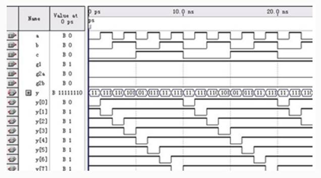</p>
<h2 id="4位二进制加法器"><a href="#4位二进制加法器" class="headerlink" title="4位二进制加法器"></a>4位二进制加法器</h2><p>实验内容：用D触发器实现4位二进制加法器，用仿真软件仿真，观察波形图</p>
<p>实验仪器：D触发器</p>
<p>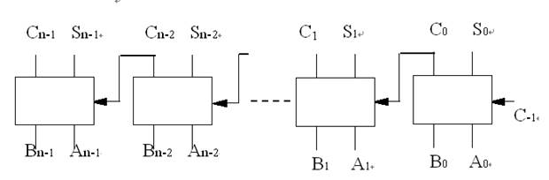</p>
<p>图中Ａ和Ｂ是用来相加的两n位输入信号，Ｃn-1，Ｓn-1，Ｓn-2，……Ｓ2,Ｓ1,Ｓ0是它们的和。</p>
<p>在该电路中对Ａ0和Ｂ0相加是用一个半加器，对其它位都用全加器。</p>
<p>如果需要串接这些电路以增加相加的位数，那么它的第一级也必须是一个全加器。</p>
<p>利用1位二进制全加器构成一个4位二进制全加器</p>
<p>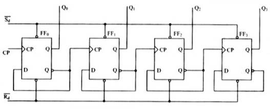</p>
<p>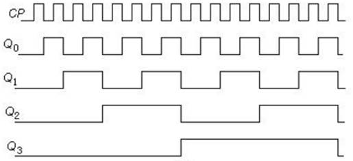</p>
<h2 id="四选一数据选择器"><a href="#四选一数据选择器" class="headerlink" title="四选一数据选择器"></a>四选一数据选择器</h2><p>实验内容：用与门、或门、非门设计四选一数据选择器，用仿真软件仿真，观察波形图</p>
<p>实验仪器：与门、或门、非门</p>
<p>数据选择器又称输入多路选择器、多路开关。它的功能是在选择信号的控制下，</p>
<p>从若干路输入数据中选择某一路输入数据作为输出。</p>
<p>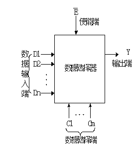</p>
<p>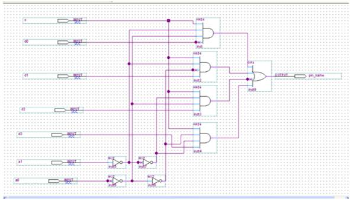</p>
<p>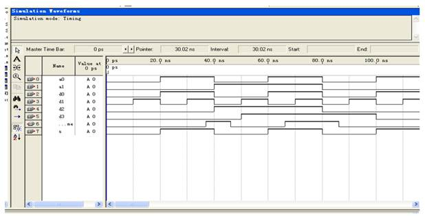</p>
<h1 id="实验3-时序电路设计"><a href="#实验3-时序电路设计" class="headerlink" title="实验3 时序电路设计"></a>实验3 时序电路设计</h1><h2 id="D触发器、JK触发器"><a href="#D触发器、JK触发器" class="headerlink" title="D触发器、JK触发器"></a>D触发器、JK触发器</h2><p>实验目的：</p>
<p>1．掌握D触发器、JK触发器的工作原理。</p>
<p>2．学会正确使用D触发器、JK触发器。</p>
<p>3.学习利用EDA工具设计简单时序电路。</p>
<p>4.掌握简单时序电路的分析、设计、波形仿真、器件编程及测试方法</p>
<p>JK触发器JKFF（或双JK触发器74LS73、74LS76中一个JK触发器）功能测试与分析。</p>
<p>JK触发器输入端口CLR是复位端，PRN是置位端，CLKS是时钟。给出CK，J，K的波形，</p>
<p>仿真JK触发器的功能，说明JK触发器的CLK何时有效。</p>
<p>D触发器74LS74是上升沿触发，JK触发器74LS73是下降沿触发</p>
<p>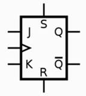     JK触发器波形图</p>
<p>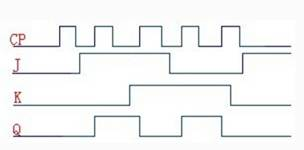</p>
<p>D触发器DFF（或双D触发器74LS74中一个D触发器）功能测试。</p>
<p>D触发器的输入端口CLR是复位或清零，PRN是（置位）；给定D（数据）、CLK（时钟）波形序列，</p>
<p>进行波形仿真，记录输入与输出Q波形。说明D触发器是电平触发还是上升沿触发，分析原因。</p>
<p>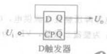</p>
<h1 id="实验4基于VHDL的基本逻辑电路设计"><a href="#实验4基于VHDL的基本逻辑电路设计" class="headerlink" title="实验4基于VHDL的基本逻辑电路设计"></a>实验4基于VHDL的基本逻辑电路设计</h1><p>实验目的：</p>
<pre><code>学会使用VHDL语言设计数字单元电路的方法。

掌握用VHDL语言设计的数字单元电路的调试，波形仿真的方法。</code></pre><h2 id="BCD码加法器"><a href="#BCD码加法器" class="headerlink" title="BCD码加法器"></a>BCD码加法器</h2><p>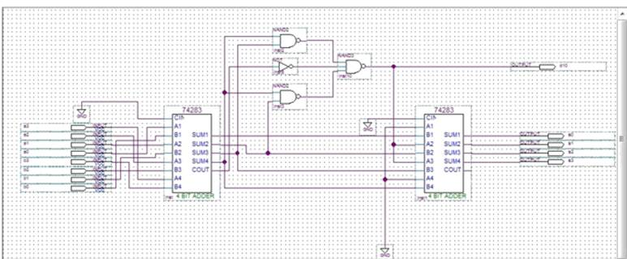</p>
<h2 id="波形图-1"><a href="#波形图-1" class="headerlink" title="波形图"></a>波形图</h2><p>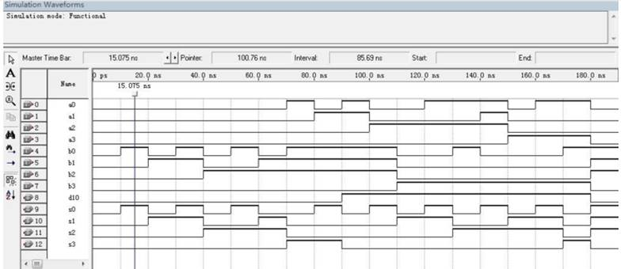</p>
<h1 id="实验五-数字钟设计"><a href="#实验五-数字钟设计" class="headerlink" title="实验五 数字钟设计"></a>实验五 数字钟设计</h1><p>实验目的：利用实验系统的资源，对设计的电路进行组装和功能检测。</p>
<p>设计一个四兆分频器，十进制计数器，BCD-7段译码器，利用实验系统的资源，</p>
<p>对设计的电路进行组装和功能检测。</p>
<h2 id="10秒计时器"><a href="#10秒计时器" class="headerlink" title="10秒计时器"></a>10秒计时器</h2><p>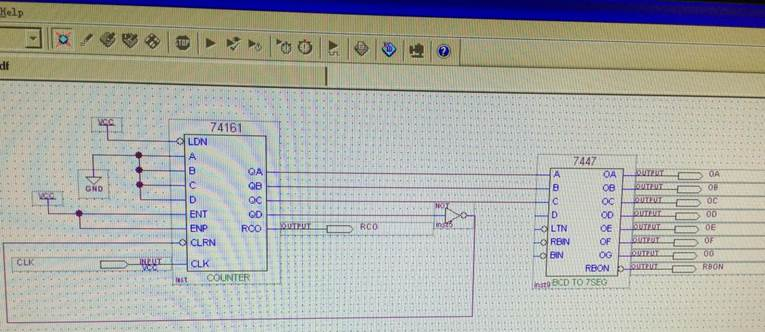</p>
<h2 id="数字钟"><a href="#数字钟" class="headerlink" title="数字钟"></a>数字钟</h2><p>实验目的：充分利用实验系统提供的硬件资源，用VHDL语言（或组合逻辑图像结合）</p>
<p>设计一个分（两位）、秒（两位）计时器。</p>
<p>包括分频器、变速部分、降速部分、数据选择部分、数字显示部分</p>
<p>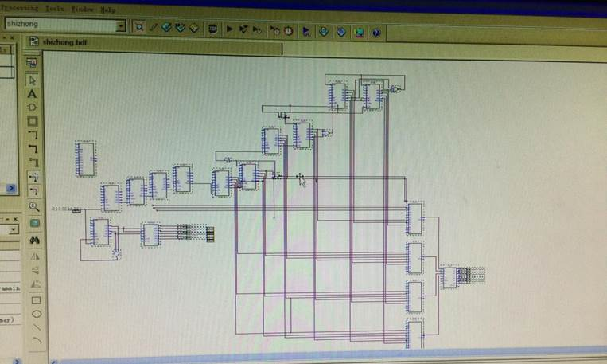</p>
<p>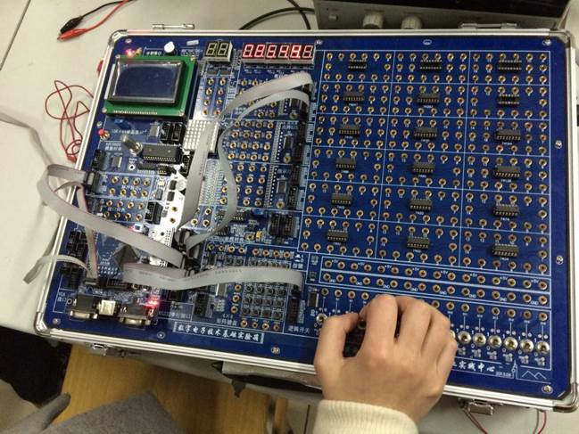</p>
<h1 id="写在最后"><a href="#写在最后" class="headerlink" title="写在最后"></a>写在最后</h1><p>最近在整理以前做过的东西，现在看来基本什么都不记得了，只记得最后一张图里不是我的手，应该是位女同学的，当时互相偷，就硬偷…进行实验的电脑上都带着病毒，然后大家拷贝回来的PPT沾满了毒hhh，回来插自己电脑上很多都中招了…20200331_2302，我刚把那个PPT文件夹给删除了嘻嘻。</p>
<p>本科这四年的时光好快，现在很是感慨。</p>

    
  </div>

</article>


   

   
  <div class="box-prev-next clearfix">
    <a class="show pull-left" href="/2017/01/07/Java作业整理/">
        <i class="icon icon-angle-left"></i>
    </a>
    <a class="show pull-right" href="/2017/05/23/微机原理与系统设计上机作业/">
        <i class="icon icon-angle-right"></i>
    </a>
  </div>


</div>


  <a id="backTop" class="back-top">
    <i class="icon-angle-up"></i>
  </a>


  <div class="modal" id="modal">
  <span id="cover" class="cover hide"></span>
  <div id="modal-dialog" class="modal-dialog hide-dialog">
    <div class="modal-header">
      <span id="close" class="btn-close">关闭</span>
    </div>
    <hr>
    <div class="modal-body">
      <ul class="list-toolbox">
        
          <li class="item-toolbox">
            <a
              class="CIRCLE"
              href="/archives/"
              rel="noopener noreferrer"
              target="_self"
              >
              文章
            </a>
          </li>
        
          <li class="item-toolbox">
            <a
              class="CIRCLE"
              href="/category/"
              rel="noopener noreferrer"
              target="_self"
              >
              分类
            </a>
          </li>
        
          <li class="item-toolbox">
            <a
              class="CIRCLE"
              href="/tag/"
              rel="noopener noreferrer"
              target="_self"
              >
              标签
            </a>
          </li>
        
          <li class="item-toolbox">
            <a
              class="CIRCLE"
              href="/link/"
              rel="noopener noreferrer"
              target="_self"
              >
              友链
            </a>
          </li>
        
          <li class="item-toolbox">
            <a
              class="CIRCLE"
              href="/about/"
              rel="noopener noreferrer"
              target="_self"
              >
              关于我
            </a>
          </li>
        
          <li class="item-toolbox">
            <a
              class="CIRCLE"
              href="/search/"
              rel="noopener noreferrer"
              target="_self"
              >
              搜索
            </a>
          </li>
        
      </ul>

    </div>
  </div>
</div>


  
      <div class="fexo-comments comments-post">
    

    

    
    

    

    
    

    

  </div>

  

  <script type="text/javascript">
  function loadScript(url, callback) {
    var script = document.createElement('script')
    script.type = 'text/javascript';

    if (script.readyState) { //IE
      script.onreadystatechange = function() {
        if (script.readyState == 'loaded' ||
          script.readyState == 'complete') {
          script.onreadystatechange = null;
          callback();
        }
      };
    } else { //Others
      script.onload = function() {
        callback();
      };
    }

    script.src = url;
    document.getElementsByTagName('head')[0].appendChild(script);
  }

  window.onload = function() {
    loadScript('/js/bundle.js?235683', function() {
      // load success
    });
  }
</script>

</body>
</html>
